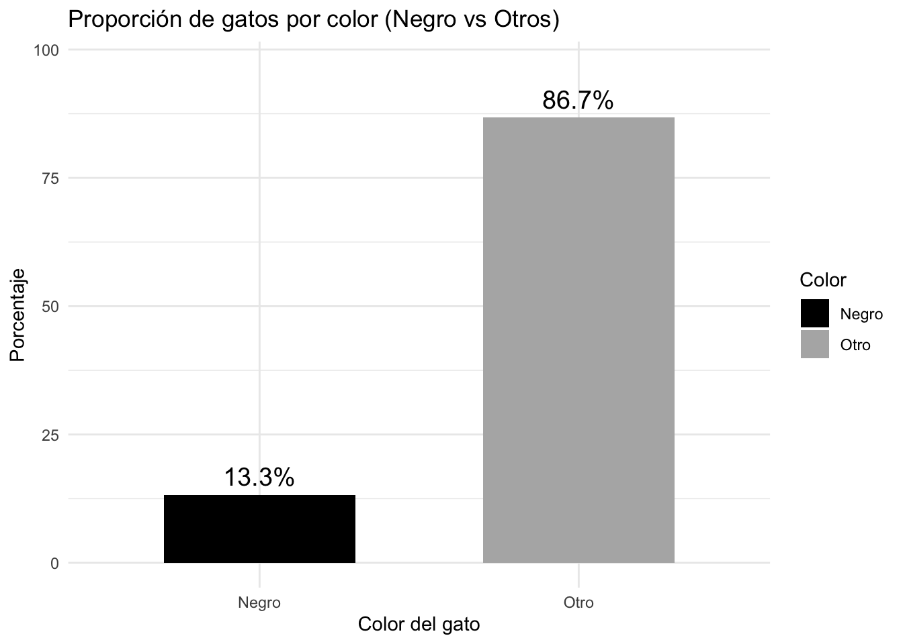
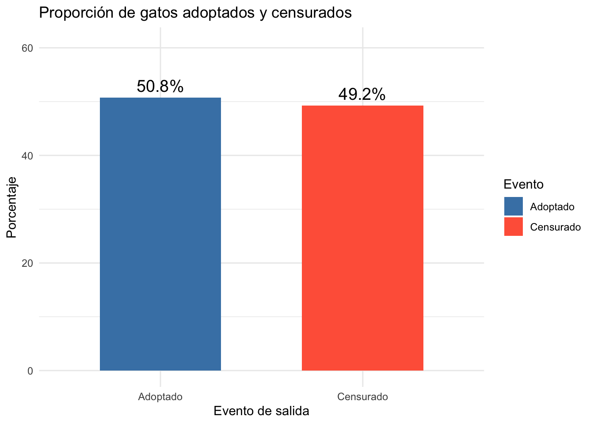
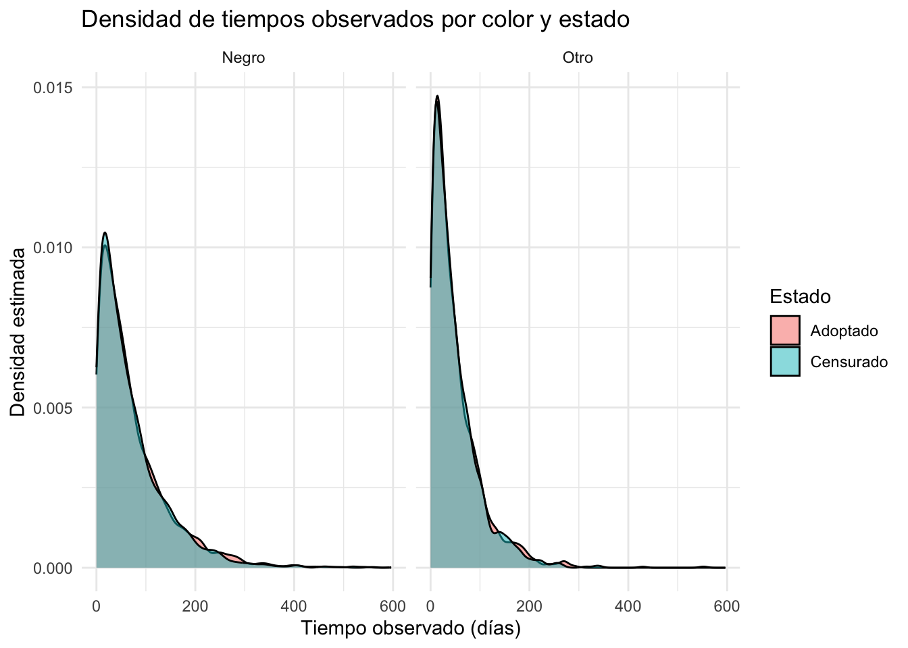
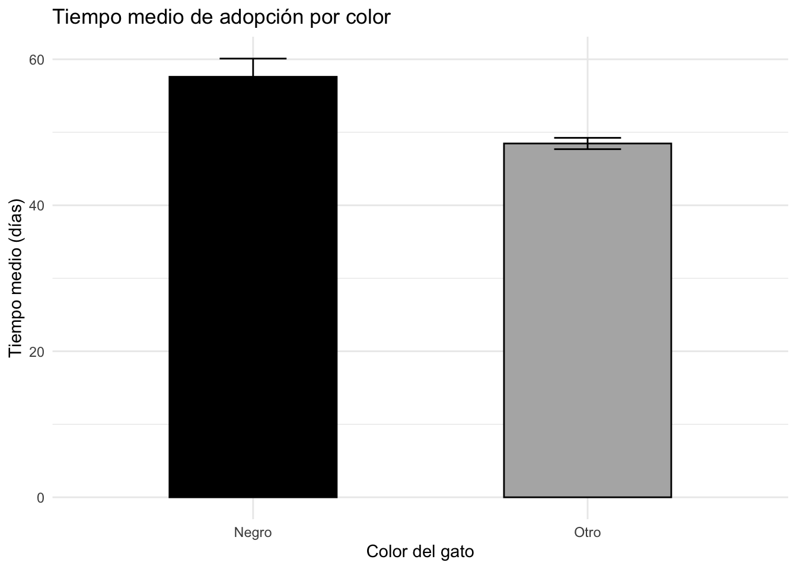
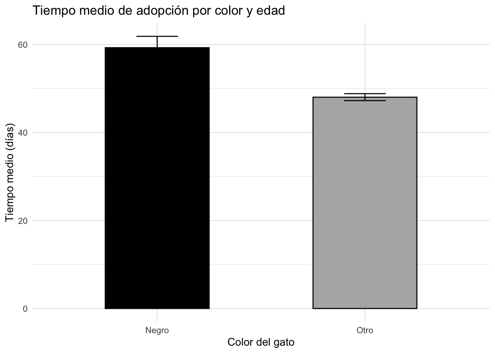

Rows: 22,356
Columns: 9
$ id <fct> A730601, A679549, A683656, A709749, A733551, A756485, A7…
$ days_to_event <int> 1, 25, 4, 41, 9, 4, 4, 5, 24, 2, 34, 27, 3, 151, 106, 4,…
$ date_out <fct> 07/08/2016 09:00:00 AM, 06/16/2014 01:54:00 PM, 07/17/20…
$ out_event <fct> Transfer, Transfer, Adoption, Transfer, Transfer, Adopti…
$ date_in <fct> 07/07/2016 12:11:00 PM, 05/22/2014 03:43:00 PM, 07/13/20…
$ in_event <fct> Stray, Stray, Stray, Stray, Stray, Stray, Stray, Owner S…
$ breed <fct> Domestic Shorthair Mix, Domestic Shorthair Mix, Snowshoe…
$ color <fct> Blue Tabby, Black/White, Lynx Point, Calico, Brown Tabby…
$ intake_age <int> 7, 1, 2, 12, 1, 1, 2, 24, 1, 3, 4, 12, 1, 7, 0, 12, 1, 1…Adopciones de Gatos - Análisis de Supervivencia
Proyecto Final
Introducción
El presente análisis se basa en el libro Statistical Rethinking de Richard McElreath (segunda edición), el cual introduce los modelos de supervivencia como herramientas adecuadas para estudiar eventos contables en el tiempo, especialmente cuando el resultado de interés es la duración hasta que ocurre un evento. Estos modelos son particularmente útiles en contextos donde algunas observaciones están censadas, es decir, no se ha observado aún el evento de interés, pero se tiene información parcial sobre el tiempo de espera.
El objetivo de este estudio es evaluar si el color del gato influye en el tiempo que tarda en ser adoptado desde su ingreso a un albergue. Esta pregunta se enmarca dentro de un modelo de supervivencia con tiempos de espera que se modelan mediante una distribución exponencial, y que considera adecuadamente los casos censados (gatos que no fueron adoptados durante el periodo de observación).
Para ello, se emplea el conjunto de datos AustinCats, incluido en el paquete rethinking, que contiene información detallada sobre más de 22,000 gatos atendidos en un refugio animal. A continuación, se presenta una descripción general de la estructura del conjunto de datos:
Tratamiento de variables
Se creó una variable binaria color_group que clasifica a los gatos como “Black” si su color es exactamente negro, y “Other” en cualquier otro caso. A partir de esta variable, se calculó la proporción de cada grupo: 13.3% de los gatos son negros y 86.7% de otro color. La gráfica de barras resultante ilustra estas proporciones, destacando visualmente la menor representación de gatos negros en el refugio.

Siguiendo el tratamiento propuesto por McElreath, se transformó la variable out_event en dos indicadores binarios: adopted, que toma el valor 1 si el gato fue adoptado, y censored, que toma el valor 1 si el evento fue distinto a adopción. Este enfoque permite distinguir entre observaciones completas y censuradas, lo cual es fundamental en modelos de supervivencia.

En este caso, el 50.8% de los gatos fueron adoptados, mientras que el 49.2% fueron censurados. Estos últimos incluyen tanto a los gatos que permanecen en el refugio como a aquellos que salieron por otras razones. Esta proporción cercana al 50% resalta la importancia de incorporar adecuadamente la censura por la derecha para evitar sesgos en la estimación de los tiempos de espera hasta la adopción.
Modelo Generativo
DAG
grViz("
digraph {
graph [ranksep = 0.2, rankdir = LR]
node [shape=plaintext]
U [shape=circle]
Color
Days
Adoption
edge [minlen = 3]
U -> Adoption
Color -> Adoption
Adoption -> Days
}
", width = 400)En este DAG:
- U representa factores no observados (por ejemplo, personalidad del gato o condiciones del adoptante).
- Color representa el color del gato, la variable de interés observada.
- Adoption es la tasa de adopción
- Days es el tiempo observado hasta la adopción (o censura), generado a partir de la tasa Adoption.
Este esquema refleja la suposición de que tanto el color como otros factores no observados influyen en la tasa de adopción, la cual a su vez determina el tiempo hasta la adopción o censura.
El fenómeno que se busca modelar es el tiempo que tarda un gato en ser adoptado desde su ingreso al refugio. Este tipo de variable —tiempo hasta un evento— es típicamente abordado mediante modelos de supervivencia. En este caso, se asume que los tiempos de espera siguen una distribución exponencial, adecuada cuando se supone que la probabilidad de adopción es constante a lo largo del tiempo, es decir, que la “tasa de adopción” no depende del tiempo ya transcurrido.
El tiempo de espera hasta la adopción se modela como una variable aleatoria continua con distribución exponencial: \[D_i \sim \text{Exponencial}(\lambda_i)\] donde:
- \(D_i\): tiempo hasta la adopción o censura del gato \(i\),
- \(\lambda_i = \frac{1}{\mu_i}\): tasa de adopción, inversa del tiempo medio,
- \(log(\mu_i) = \alpha_{c[i]}\): tiempo medio depende del grupo de color (negro u otro), con \(\alpha_1\) para negros y \(\alpha_2\) para otros. Además:
- Si el gato no fue adoptado (censura), se simula el tiempo de espera hasta cierto umbral, y se marca como censado.
- La probabilidad de adopción condicionada a los días observados, si censado, se obtiene con la complementaria de la CDF: \[Pr(D_i > d_i | \lambda_i) = exp(-\lambda_i d_i)\]
Simulación
La siguiente función simula una muestra de N gatos en un refugio:
sim_cats <- function(N = 10000, alpha_black = log(70), alpha_other = log(50), p_black = 0.3, p_censored = 0.49) {
# 1 = negro, 2 = otro
color_id <- rbinom(N, 1, p_black) + 1
# Parametrización
alpha <- c(alpha_black, alpha_other)
mu <- exp(alpha[color_id])
lambda <- 1 / mu
# Simular tiempos verdaderos
time_true <- rexp(N, rate = lambda)
# Asignar censura de manera aleatoria (p_censored de los casos)
censored <- rbinom(N, 1, p_censored)
# Tiempo observado es igual al real si fue adoptado, o censurado artificialmente
# Para simplificar, no truncamos el tiempo observado
adopted <- 1L - censored
time_obs <- time_true # todos los tiempos son observados hasta ese punto
tibble(
color_id = color_id,
mu = mu,
lambda = lambda,
time_true = time_true,
time_obs = time_obs,
adopted = adopted,
censored = censored
)
}
grViz("
digraph {
graph [rankdir=LR, nodesep=1]
node [shape=box, style=filled, fillcolor=LightGray]
color_id [label='color_id']
mu [label='mu']
lambda [label='lambda']
time_true [label='time_true']
time_obs [label='time_obs']
adopted [label='adopted']
censored [label='censored']
color_id -> mu
mu -> lambda
lambda -> time_true
time_true -> time_obs
time_obs -> adopted
time_obs -> censored
}
")grViz("
digraph {
graph [ranksep = 0.2, rankdir = LR]
node [shape=plaintext]
Color
Days
Adoption
edge [minlen = 3]
Color -> Adoption
Adoption -> Days
}
", width = 400)graph LR
U((U)) --> A
C --> A
A --> D
style U fill:#fff,stroke:#333,stroke-width:2px
style A fill:none,stroke:none
style C fill:none,stroke:none
style D fill:none,stroke:none
linkStyle 0 stroke-width:2px,stroke:#333
linkStyle 1 stroke-width:1px,stroke:#333
linkStyle 2 stroke-width:1px,stroke:#333
%% Adjust spacing (similar to ranksep)
%%{init: {'config': {'rankSpacing': 20}}}%%
grViz("
digraph {
graph [ranksep=0.5, rankdir=LR]
node [shape=box, fontname=Helvetica]
Color [label='Color ID']
mu [label='μᵢ (mean time)', shape=ellipse]
lambda [label='λᵢ (rate)', shape=ellipse]
A [label='Aᵢ (Adopted or Censored)']
D [label='Dᵢ (Time to Event)']
Color -> mu
mu -> lambda
lambda -> D
A -> D
}
")Modelo de adopción por color
En este modelo de supervivencia exponencial, analizamos el efecto del color del gato sobre el tiempo que tarda en ser adoptado, modelando dicho tiempo como una variable aleatoria con distribución exponencial cuya tasa depende del color del gato. Una ventaja de este enfoque es que permite incorporar no solo a los gatos que fueron adoptados, sino también a aquellos que no lo fueron durante el periodo de observación. A estos últimos se les considera como casos censurados, es decir, sabemos cuántos días estuvieron en el refugio sin ser adoptados, pero no conocemos el tiempo total que habrían esperado si hubieran permanecido más tiempo. Al incorporar esta información de censura en el modelo, se aprovecha mejor la evidencia disponible y se evitan sesgos en la estimación del tiempo medio de adopción por color. La inferencia se realiza bajo un enfoque bayesiano utilizando Stan.
# Preparar datos incluyendo censura
cats <- cats |>
mutate(
color_id = if_else(color == "Black", 1L, 2L),
adopted = if_else(out_event == "Adoption", 1L, 0L),
days = as.numeric(days_to_event)
)
dat_stan_cens <- list(
N = nrow(cats),
days = cats$days,
color = cats$color_id,
adopted = cats$adopted
)
# Modelo Stan que considera censura
stan_code_cens <- "
data {
int<lower=1> N;
real<lower=0> days[N];
int<lower=1,upper=2> color[N];
int<lower=0,upper=1> adopted[N];
}
parameters {
vector[2] alpha;
}
model {
for (i in 1:N) {
real lambda = exp(-alpha[color[i]]);
if (adopted[i] == 1)
target += exponential_lpdf(days[i] | lambda);
else
target += exponential_lccdf(days[i] | lambda);
}
}
"
# Compilar y ajustar
compiled_cens <- rstan::stan_model(model_code = stan_code_cens)
fit_cens <- rstan::sampling(compiled_cens, data = dat_stan_cens,
chains = 4, iter = 2000, cores = 4)Found more than one class "stanfit" in cache; using the first, from namespace 'rethinking'Also defined by 'rstan'Found more than one class "stanfit" in cache; using the first, from namespace 'rethinking'Also defined by 'rstan'Found more than one class "stanfit" in cache; using the first, from namespace 'rethinking'Also defined by 'rstan'Found more than one class "stanfit" in cache; using the first, from namespace 'rethinking'Also defined by 'rstan'post_cens <- as.data.frame(fit_cens)
mu_negro_cens <- exp(post_cens$`alpha[1]`)
mu_otro_cens <- exp(post_cens$`alpha[2]`)
library(tibble)
results_tbl_cens <- tibble(
Color = c("Negro", "Otro"),
Media = c(mean(mu_negro_cens), mean(mu_otro_cens)),
`IC 89% Inferior` = c(quantile(mu_negro_cens, 0.055), quantile(mu_otro_cens, 0.055)),
`IC 89% Superior` = c(quantile(mu_negro_cens, 0.945), quantile(mu_otro_cens, 0.945))
)
print(results_tbl_cens)# A tibble: 2 × 4
Color Media `IC 89% Inferior` `IC 89% Superior`
<chr> <dbl> <dbl> <dbl>
1 Negro 57.6 55.2 60.1
2 Otro 48.5 47.7 49.2ggplot(results_tbl_cens, aes(x = Color, y = Media, fill = Color)) +
geom_col(width = 0.5, color = "black") +
geom_errorbar(aes(ymin = `IC 89% Inferior`, ymax = `IC 89% Superior`), width = 0.2) +
labs(
title = "Tiempo medio de adopción por color",
y = "Tiempo medio (días)", x = "Color del gato"
) +
theme_minimal() +
scale_fill_manual(values = c("Negro" = "black", "Otro" = "gray70")) +
theme(legend.position = "none")
Los resultados muestran que, en promedio, los gatos negros tardan más en ser adoptados que los de otros colores. Este patrón sugiere que el color del gato podría estar asociado con un menor ritmo de adopción, aunque es importante considerar que pueden existir otros factores no observados que también influyen en este proceso.
Ajuste controlando la variable edad
Para estimar de forma más realista el efecto del color del gato sobre el tiempo de adopción, se construyó un modelo de supervivencia exponencial que controla por la edad al ingreso y además considera la censura a la derecha. Esto permite diferenciar entre gatos que fueron efectivamente adoptados y aquellos que no lo fueron durante el periodo de observación.
Se asume que el tiempo hasta la adopción sigue una distribución exponencial con una tasa específica para cada gato. Esta tasa depende del color del pelaje y la edad al ingreso. En los casos en que el evento no se observa (censura), se modela la probabilidad de no adopción hasta el día observado usando la función de supervivencia de la distribución exponencial.
Este enfoque permite estimar con mayor precisión el efecto del color, aislando posibles confusiones derivadas de diferencias sistemáticas en edad entre grupos. Así se evita atribuir al color lo que en realidad podría ser efecto de la edad.
# Preparar los datos
cats <- cats |>
filter(!is.na(intake_age)) |>
mutate(
color_id = if_else(color == "Black", 1L, 2L),
age_std = as.numeric(scale(intake_age)), # edad estandarizada
days = as.numeric(days_to_event),
adopted = if_else(out_event == "Adoption", 1L, 0L) # 1 = adoptado, 0 = censurado
)
dat_stan <- list(
N = nrow(cats),
days = cats$days,
color = cats$color_id,
age = cats$age_std,
adopted = cats$adopted
)
# Modelo Stan con censura (usando funciones ya incluidas en Stan)
stan_model_code <- "
data {
int<lower=1> N;
real<lower=0> days[N];
int<lower=1,upper=2> color[N];
real age[N];
int<lower=0,upper=1> adopted[N];
}
parameters {
vector[2] alpha;
real beta_age;
}
model {
for (i in 1:N) {
real mu = exp(alpha[color[i]] + beta_age * age[i]);
real lambda = 1 / mu;
if (adopted[i] == 1)
target += exponential_lpdf(days[i] | lambda);
else
target += exponential_lccdf(days[i] | lambda);
}
}
"
compiled_model <- rstan::stan_model(model_code = stan_model_code)Found more than one class "stanfit" in cache; using the first, from namespace 'rethinking'Also defined by 'rstan'Found more than one class "stanfit" in cache; using the first, from namespace 'rethinking'Also defined by 'rstan'fit <- rstan::sampling(compiled_model, data = dat_stan, chains = 4, cores = 4, iter = 2000)Found more than one class "stanfit" in cache; using the first, from namespace 'rethinking'
Also defined by 'rstan'Found more than one class "stanfit" in cache; using the first, from namespace 'rethinking'Also defined by 'rstan'Found more than one class "stanfit" in cache; using the first, from namespace 'rethinking'Also defined by 'rstan'Found more than one class "stanfit" in cache; using the first, from namespace 'rethinking'Also defined by 'rstan'post <- as.data.frame(fit)
# Evaluación a edad promedio
mean_age <- mean(cats$age_std, na.rm = TRUE)
mu_negro <- exp(post$`alpha[1]` + post$beta_age * mean_age)
mu_otro <- exp(post$`alpha[2]` + post$beta_age * mean_age)
# Tabla resumen
results_tbl <- tibble(
Color = c("Negro", "Otro"),
Media = c(mean(mu_negro), mean(mu_otro)),
IC_Inf = c(quantile(mu_negro, 0.055), quantile(mu_otro, 0.055)),
IC_Sup = c(quantile(mu_negro, 0.945), quantile(mu_otro, 0.945))
)
ggplot(results_tbl, aes(x = Color, y = Media, fill = Color)) +
geom_col(width = 0.5, color = "black") +
geom_errorbar(aes(ymin = IC_Inf, ymax = IC_Sup), width = 0.2) +
labs(
title = "Tiempo medio de adopción por color y edad ",
y = "Tiempo medio (días)", x = "Color del gato"
) +
theme_minimal() +
scale_fill_manual(values = c("Negro" = "black", "Otro" = "gray70")) +
theme(legend.position = "none")
Con estos resultados vemos que los gatos negros tienden a tardar más en ser adoptados, lo cual respalda la hipótesis de que el color podría influir en las decisiones de adopción, aunque no necesariamente sea el único factor causal
grViz("
digraph {
graph [rankdir=LR]
node [shape=box, style=filled, fillcolor=LightGray, fontname=Helvetica]
Color [label='Color del gato']
Edad [label='Edad al ingreso']
Mu [label='μᵢ (tiempo medio)', shape=ellipse]
Lambda [label='λᵢ (tasa)', shape=ellipse]
Dias [label='Dᵢ (Tiempo hasta adopción)']
Estado [label='Aᵢ (Adoptado o Censurado)']
Color -> Mu
Edad -> Mu
Mu -> Lambda
Lambda -> Dias
Estado -> Dias
}
")grViz("
digraph {
graph [rankdir=LR]
node [shape=plaintext, fontname=Helvetica]
Color
Edad
Tasa
Tiempo
Color -> Tasa
Edad -> Tasa
Tasa -> Tiempo
}
")